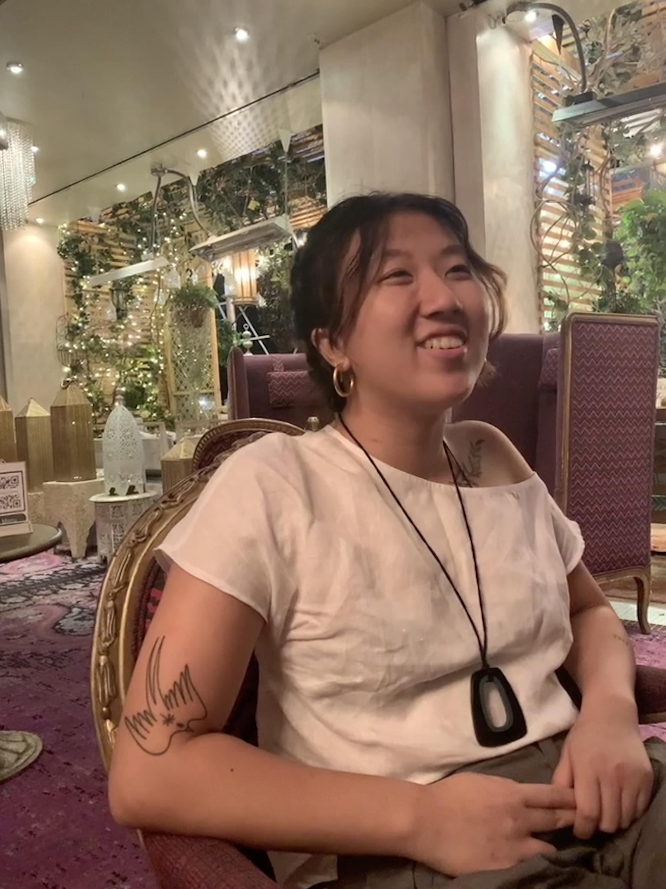

<!DOCTYPE html>
<html lang="en">
    <meta charset="utf-8" />
    <meta name="viewport" content="width=device-width, initial-scale=1" />
</html>

<head>
    <title>Audrey Vo | About</title>
    <link rel="stylesheet" href="./style.css" />
    <link
      href="https://fonts.googleapis.com/icon?family=Material+Symbols+Rounded"
      rel="stylesheet"
    />
    <script>
    function toggleMenu() {
        const el = document.getElementById('main-nav')
        el.classList.toggle('open')
    }
    </script>
</head>

<body>
    <nav class="main-menu">
        <a href="home.html"></a>
        <span class="mobile-menu" onclick="toggleMenu()">
            <!-- case sensitive USE ALL LOWERCASE -->
            <span class="material-symbols-rounded">menu</span>
        </span>


        <ul class="main-nav" id="main-nav">
            <li class="home-nav"><a href="./home.html">Home</a></li>
            <li><a href="./work2.html">Work</a></li>
            <li><a href="./aboutme.html" class="active">About</a></li>
            <li><a href="./contact.html">Contact</a></li>
        </ul>
    </nav>
    <div class="about-container">
        <div class="about-photo-wrapper">
            
        </div>
        <div class="about-text">
            <h1>About Me</h1>
            <p>
                I'm a Presidential Honors Scholar at NYU in my third year, majoring in International Relations with minors in Integrated Digital Media and French. In my free time, I like to play video games and paint. You can keep up with my art on <a href="https://instagram.com/audredraws" target="_blank">Instagram</a>.
            </p>
            <h2>Experience</h2>
            <p>
                NYU Politics Society, <span class="italics">In The Zeitgeist</span>, E-board Member and Managing Editor (September 2020 - present)
                <br><br>
                Center for Social Media and Politics (CSMaP), Research Assistant (September 2023 - present)
                <br><br>
                Housing Rights Initiative, Fair Housing Educator (October 2021 - January 2022)

            </p>
            <h2>Publications</h2>
            <p>
                <a href="https://afkarjournal.wordpress.com/issues/" target="_blank">"A Generational Fight for Democracy? How the NYT Framed Youth in the Arab Spring,"</a> in <span class="italics">Afkar: Undergraduate Journal for Middle Eastern Studies</span>, vol. 5 issue 1 (September 2023).
                <br><br>
                <a href="https://wp.nyu.edu/esferas/2021/12/01/esferas-12-migracion-y-asilo/" target="_blank">Exile and Adaptation in Remedios Varo's Exploración de las fuentes del Río Orinoco,"</a> in <span class="italics">Migraciones, Esferas</span> ed. 12, (December 2021).
            </p>
        </div>
    </div>

    <footer class="audrey-footer">
        <p>2023 © audrey vo ˘ᵕ˘</p>
        <p>Built by Audrey Vo</p>
    </footer>
</body>